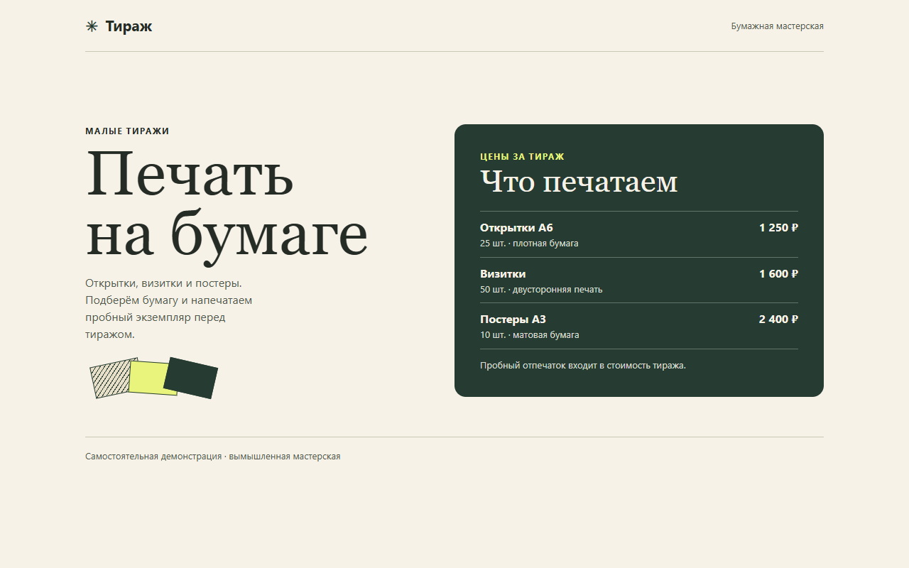
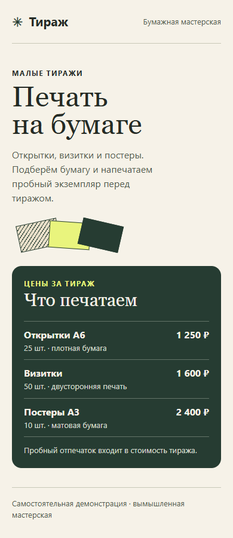

- Задача
- Что сделано
- Результат
- Как проверено
Вёрстка и обработка данных
Исправляю отображение сайтов на телефонах и привожу в порядок выгрузки. В портфолио есть примеры работ с проверкой результата.
Посмотреть работы

Работы
С чем можно обратиться
У каждой задачи есть результат, который можно проверить на странице, в отчёте или на тестовых данных.
- Вёрстка и правки сайтов
- Адаптация под телефон и исправления HTML, CSS и JavaScript.
- Данные и автоматизация
- Очистка CSV, Excel и JSON, скрипты для файлов и повторяющихся операций.
Обсудим задачу
Опиши, что нужно сделать. Если есть ссылка на страницу или пример данных, приложи их к сообщению.